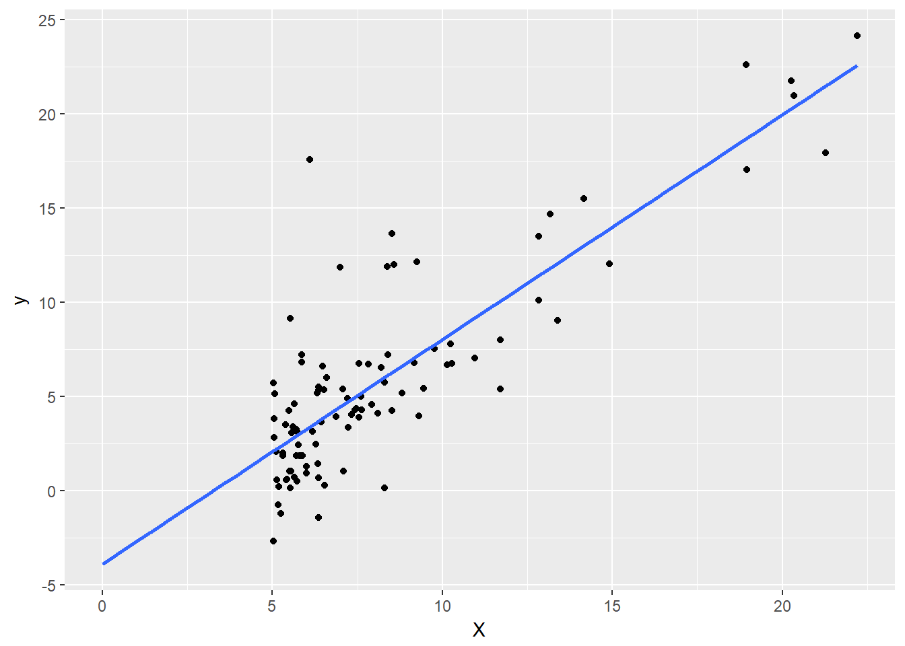

2 Linear Regression
library(ggplot2)
library(latex2exp)
library(shiny)
ex1data1 = read.csv("ex1/ex1data1.txt", header=FALSE)
names(ex1data1)=c("X","y")
X = matrix(c(rep(1, nrow(ex1data1)), ex1data1$X), nrow=nrow(ex1data1), byrow=F)
y = ex1data1$y
theta=matrix(c(0,0),nrow=2)2.1 Model representation
\[h_{\theta}\left(x\right)\ =\ \theta_0+\theta_1\cdot x\]
Where \(\theta_0\) is the y intercept and \(\theta_1\) is the gradient of the straight line fit.
ggplot(ex1data1, aes(x=X, y=y)) +
geom_point() +
xlim(0,NA) +
geom_smooth(method="lm", se=F, fullrange=T)
lm(y~X)##
## Call:
## lm(formula = y ~ X)
##
## Coefficients:
## (Intercept) X1 X2
## -3.896 NA 1.1932.2 Cost Function
\[J\left(\theta_0,\theta_1\right)=\frac{1}{2\cdot m}\sum_{_{i=1}}^m\left(h_{\theta}\left(x_i\right)-y_i\right)^2\]
Which is the sum of the squared vertical distance of each point from the straight line.
m=lm(y~X)
yhat=m$fitted.values
diff=y-yhat
ggplot(ex1data1, aes(x=X, y=y)) +
geom_point() +
geom_line(aes(x=X, y=yhat)) +
geom_segment(aes(x=X, xend=X, y=y, yend=yhat, color="error"))J = function(X,y,theta) {
m=length(y)
ho = X %*% theta
return(1/(2*m) * sum((ho-y)^2))
}2.3 Gradient Descent
The aim is to minimize the cost function.
eg in 1 dimension (keeping theta0 = 0)
xs = seq(from=0,to=1.5,by=0.1)
cost = sapply(xs, function(theta1) J(X,y,rbind(0,theta1)))
qplot(x=xs,y=cost) + geom_line() + xlab(TeX("$\\theta_1$")) + ylab(TeX("$J\\left(\\theta_0=0, \\theta_1\\right)"))In 2 dimensions
theta1s = seq(from=-1,to=4,length.out=20)
theta0s = seq(from=-10,to=10, length.out=20)
cost=matrix(nrow=20,ncol=20)
for (i in 1:20) {
for (j in 1:20) {
cost[j,i] = J(X, y, rbind(theta0s[i], theta1s[j]))
}
}
# persp(x=theta0s,y=theta1s, cost, theta=-60, axes=T)
library(plotly)##
## Attaching package: 'plotly'## The following object is masked from 'package:ggplot2':
##
## last_plot## The following object is masked from 'package:stats':
##
## filter## The following object is masked from 'package:graphics':
##
## layout# plot_ly(x=theta0s, y=theta1s, z=cost, type="scatter3d", mode='markers+lines')
plot_ly(x=theta0s, y=theta1s, z=cost, type="surface") %>%
add_trace(x=c(5,0,-5), y=c(3,2,1), z=c(500,500,500), type="scatter3d", mode="lines")# contour(x=theta0s, y=theta1s, z=cost, levels=c(5,7,10,20,30,40,50,100,200,300))
theta1s = seq(from=-1,to=4,length.out=20)
theta0s = seq(from=-10,to=10, length.out=20)
cost=rbind()
for (i in 1:20) {
for (j in 1:20) {
cost=rbind(cost, c(theta0s[i], theta1s[j], J(X, y, rbind(theta0s[i], theta1s[j]))))
}
}
colnames(cost)=c("Th0","Th1","J")
ggplot(as.data.frame(cost), aes(Th0, Th1, z=J)) + geom_contour(aes(color=..level..), binwidth=10)
2.3.1 Delta theta
Delta theta is calculated from the partial derivative of the cost function
\[\theta_j\ =\ \theta_j\ -\ \alpha\cdot\frac{\partial}{\partial\theta_j}J\left(\theta_0,\theta_1\right)\]
The partial derivative can be calculated
\[ \begin{align} \frac{\partial}{\partial\theta_j}J\left(\theta\right)\ &= \frac{\partial}{\partial\theta_j}\cdot\frac{1}{2}\cdot\left(h_{\theta}\left(x\right)-y\right)^2 \\ &= \frac{1}{2}\cdot\left(h_{\theta}\left(x\right)-y\right)\cdot\frac{\partial}{\partial\theta_j}\left(h_{\theta}\left(x\right)-y\right) \\ &= \frac{1}{2}\cdot\left(h_{\theta}\left(x\right)-y\right)\cdot\frac{\partial}{\partial\theta_j}\left(h_{\theta}\left(x\right)-y\right) \\ &= \left(h_{\theta}\left(x\right)-y\right)\cdot\frac{\partial}{\partial\theta_j}\left(\sum_{_{i=1}}^n\theta_i\cdot x_i-y\right) \\ &= \left(h_{\theta}\left(x\right)-y\right)\cdot x_j \end{align} \]
Thus the delta equations using the solved partial derivative are
\[ \theta_{0\ }:=\theta_0-\alpha\cdot\frac{1}{m}\cdot\sum_{_{i=1}}^m\left(h_{\theta}\left(x_i\right)-y_i\right)\] Because \(x_i\) is 1 for \(\theta_0\)
\[\theta_1:=\theta_1-\alpha\cdot\frac{1}{m}\cdot\sum_{_{i=1}}^m\left(\left(h_{\theta}\left(x_i\right)-y_i\right)\cdot x_i\right)\]
2.3.2 Code
gradientDescent = function(X, y, theta=c(0,0), alpha=0.01, num_iters=1500) {
m = length(y)
J_history = rep(0, num_iters+1)
theta_history = matrix(nrow=num_iters+1, ncol=2)
J_history[1] = J(X, y, theta)
theta_history[1, ] = t(theta)
for (iter in 1:num_iters) {
delta0 = alpha * (1/m) * sum(((X %*% theta) - y) * X[,1])
delta1 = alpha * (1/m) * sum(((X %*% theta) - y) * X[,2])
theta = theta - rbind(delta0, delta1)
J_history[iter+1] = J(X, y, theta)
theta_history[iter+1, ] = t(theta)
}
return(list(theta=theta, theta_history = theta_history, J_history=J_history))
}2.4 Demo
## PhantomJS not found. You can install it with webshot::install_phantomjs(). If it is installed, please make sure the phantomjs executable can be found via the PATH variable.